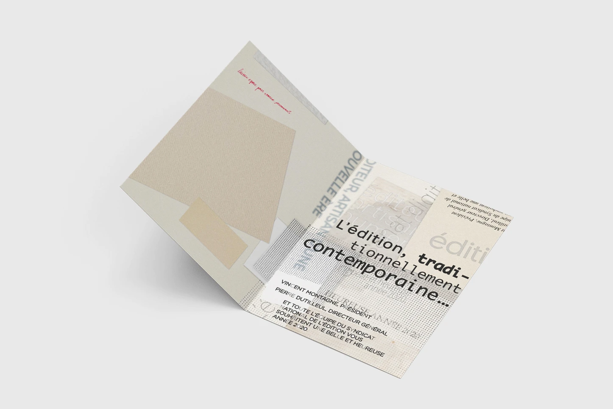
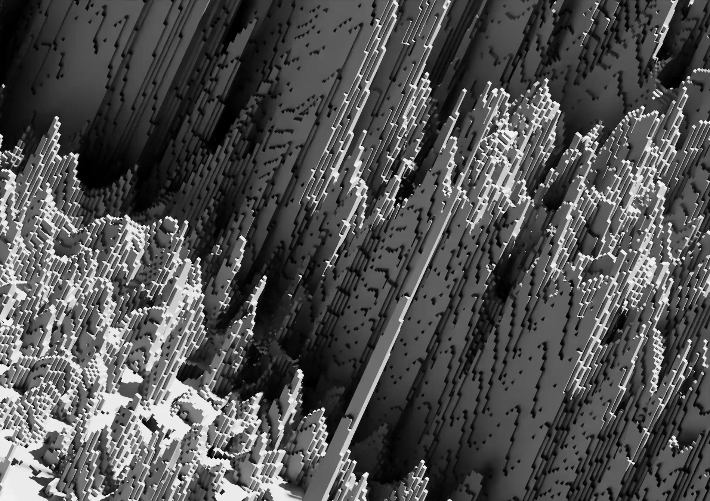
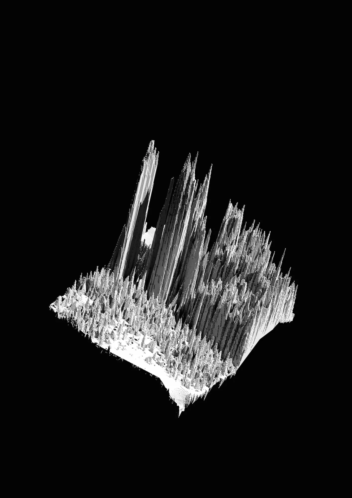
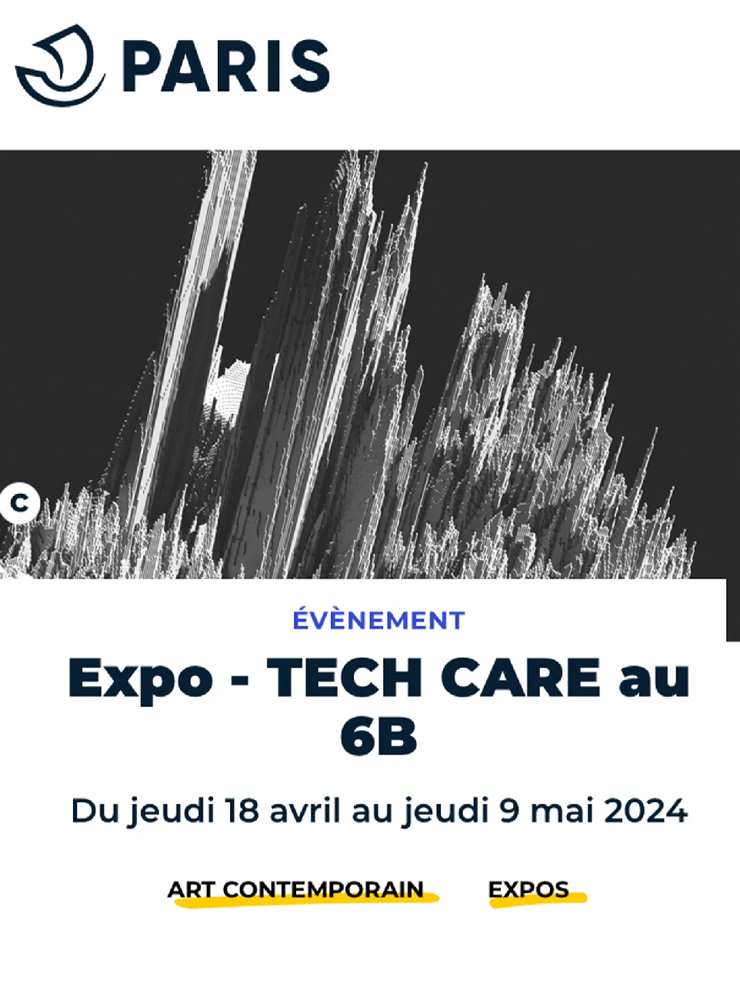
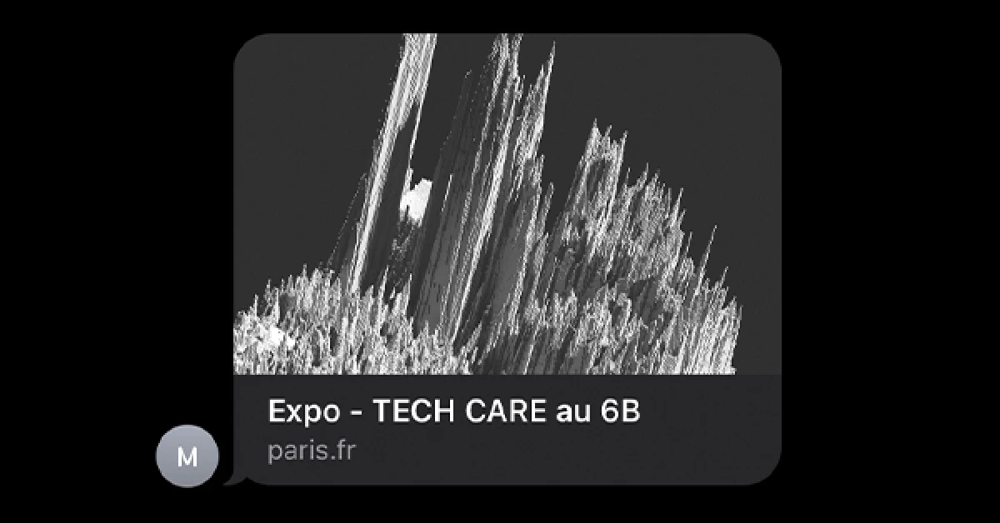

Tech Care
Catalogue d'exposition et visuels de communication


J'ai conçu le magazine de l'exposition Tech Care qui a eu lieu en avril 2024 au 6b à Saint Denis.
Imprimé par Polygraph en 25 exemplaires. Format 20x25 cm.
J'ai également réalisé les visuels principaux de l'exposition, utilisés pour la communication notamment. On les retrouve dans l'affiche et la bannière ci-dessous, réalisées par la graphiste du 6b, dans la charte graphique de leurs expositions.



